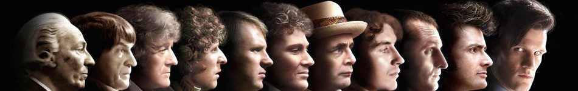

| Home | The Doctors | The Villains | |
|  | |||
|
The Ninth Doctor is an incarnation of the Doctor, the protagonist of the BBC science fiction television programme Doctor Who. He is portrayed by Christopher Eccleston during the first series of the show's revival in 2005. Within the programme's narrative, the Doctor is a time travelling, humanoid alien from a race known as the Time Lords. When the Doctor is critically injured, he can regenerate his body but in doing so gains a new physical appearance and with it, a distinct new personality. The production team's approach to the character and Eccleston's portrayal were highlighted as being intentionally different from his predecessors, with Eccleston stating that his character would be less eccentric. To fit in with a 21st-century audience, the Doctor was given a primary companion who was designed to be as independent and courageous as himself in the form of Rose Tyler. He also briefly travels with Adam Mitchell, a self-serving boy genius who acts as a foil to the companions and ultimately proves unworthy, andJack Harkness, a reformed con man from the 51st century. The Doctor, Rose and Jack form a close team but are separated in the series finale in which each character has to make difficult choices and face sacrifice. In 2006, readers of Doctor Who Magazine voted Eccleston's Doctor the third most popular Doctor. Both mainstream press and science fiction reviewers generally credit the character and Eccleston as helping to re-establish the show following its hiatus between 1996 and 2005. The character's interactions with his archenemies, the Daleks, were particularly praised. Eccleston won several awards for his single series including the 2005 National Television Award for best actor. |